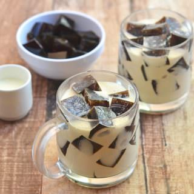
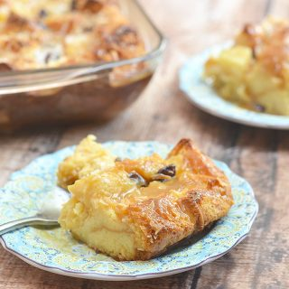
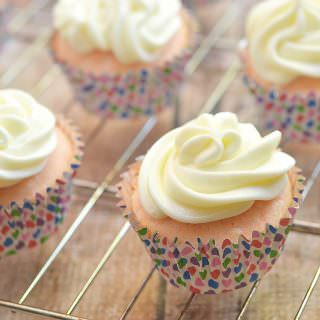
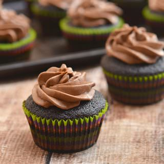

Coffee Jelly
Prep time
5 mins
Total time
3 hours and 5 mins
Author: Lalaine | Kawaling Pinoy
Recipe type: Dessert
Cuisine: Asian
Yield: 8 Servings

Ingredients
- 1 (1 ounce) package unflavored gelatin (I used Knox)
- 4 cups water
- 2 tablespoons instant coffee
- ½ cup sugar
- 1 (1 4 ounces) can sweetened condensed milk
- 1 (1 2.8 ounces) can table cream
Instructions
- In a sauce pot, bring 3 cups of the water to a boil. Add coffee and sugar and stir until
dissolved.
- In a large bowl, sprinkle the gelatin on the remaining 1 cup of cold water and let stand for
about 1 minute or until powder begins to bloom.
- Gradually add the 3 cups of boiling coffee and stir constantly for about 2 to 3 minutes or
until gelatine is completely dissolved and no granules are visible. Pour mixture into a lightly
greased baking dish. Allow to completely cool, cover, and refrigerate for about 2 to 3 hours
or until completely set. Cut into 1 -inch cubes and divide into serving cups.
- In a bowl, combine condensed milk and table cream. Stir until blended. Pour into the cups
over coffee jelly.
- Serve cold.
Hawaiian Breed Pudding
Prep time
15 mins
Cook time
1 hour
Total time
13 hours 15 mins
Author: Lalaine | Kawaling Pinoy
Recipe type: Dessert
Cuisine: Asian
Yield: 12 Servings

Ingredients
- 1 package (1 6 ounces) Goldilocks Pan de Leche
- 2 cups pineapple chunks, drain and reserve juice
- ¼ cup raisins
- 2 cups heavy cream
- 1 can (1 4 ounces) evaporated milk
- 6 eggs, beaten
- 2 cups sugar
- 1 tablespoon butter, melted
- 2 tablespoons shredded coconut, unsweetened
For the Caramel Sauce
- 4 tablespoons butter
- ¼ cup brown sugar
- ¼ cup pineapple juice
- ½ cup heavy cream
- 1/8 teaspoon nutmeg
- 1/8 teaspoon cinnamon
Instructions
- In a sauce pot, bring 3 cups of the water to a boil. Add coffee and sugar and stir until
dissolved.
- In a large bowl, sprinkle the gelatin on the remaining 1 cup of cold water and let stand for
about 1 minute or until powder begins to bloom.
- Gradually add the 3 cups of boiling coffee and stir constantly for about 2 to 3 minutes or
until gelatine is completely dissolved and no granules are visible. Pour mixture into a lightly
greased baking dish. Allow to completely cool, cover, and refrigerate for about 2 to 3 hours
or until completely set. Cut into 1 -inch cubes and divide into serving cups.
- In a bowl, combine condensed milk and table cream. Stir until blended. Pour into the cups
over coffee jelly.
- Serve cold.
Pink Velvet Cupcakes
Prep time
15 mins
Cook time
15 mins
Total time
30 mins
Author: Lalaine | Kawaling Pinoy
Recipe type: Baked Goods
Cuisine: Asian
Yield: 1 Dozen

Ingredients
- 1 ¼ cups all-purpose flour
- ¾ teaspoon baking powder
- ⅛ teaspoon baking soda
- ⅛ teaspoon salt
- ½ cup butter, room temperature
- ½ cup granulated sugar
- 3 to 4 drops pink food coloring
- 2 eggs, room temperature
- 1 teaspoon vanilla extract
- ½ cup buttermilk, room temperature
For the Cream Cheese Frosting
- 4 ounces butter, at room temperature
- 4 ounces cream cheese, at room temperature
- 2 cups powdered sugar
- 1 teaspoon vanilla extract
Instructions
- Preheat oven to 350 F. Prepare the muffin tins by lining with liners.
- In a bowl, combine flour, baking powder, baking soda and salt. Whisk until well dispersed.
- In a bowl, cream the butter and sugar using a mixer on medium speed for about 2 to 3
minutes or until light and fluffy. Add the food coloring and continue to beat.
- Add the eggs one at a time, beating well after each addition. Add vanilla extract and
continue to mix.
- Reduce the speed to low and alternately add the flour mixture and the buttermilk, beginning
and ending with the dry ingredients. Mix until just combined.
- Using a scoop or tablespoon, divide batter into prepared muffin pan. Bake in a 350 F oven
for about 1 2 to 1 5 minutes or until a toothpick inserted into the center comes out clean.
- Remove from heat and allow to cool. Frost with cream cheese frosting.
For the Cream Cheese Frosting
- In a bowl, combine butter and cream cheese. Using a mixer on high speed, beat for about 3
to 5 minutes, scraping the bowl down as necessary. Reduce the speed to low and slowly
add the powdered sugar. Stir until incorporated. Add the vanilla and mix to combine.
- Increase the speed to medium-high and whip the cream cheese mixture for aabout 1 to 2
minutes or until light and fluffy
Super Moist Chocolate Cupcakes
Prep time
5 mins
Cook time
20 mins
Total time
25 mins
Author: Lalaine | Kawaling Pinoy
Recipe type: Baked Goods
Cuisine: Asian
Yield: 1 Dozen

Ingredients
- 1-½ cups flour
- 1 cup sugar
- 3 tablespoons cocoa
- 1 teaspoon baking soda
- 1 teaspoon salt
- 1 cup water
- 5 tablespoons oil
- 1 tablespoon vinegar
- 1 teaspoon vanilla extract
For the Mocha Buttercream Frosting
- 2 ounces baking chocolate chips
- ½ cup (1 stick) butter, softened
- ¼ teaspoon vanilla extract
- ⅛ teaspoon salt
- 1 tablespoon milk
- 1 teaspoon instant coffee granules
- 1½ cups powdered sugar
Instructions
- Preheat oven to 350 F. Line a muffin pan with cupcake liners.
- In a bowl, combine flour, sugar, cocoa powder, baking soda, and salt. Whisk until there are
no visible lumps.In another bowl, combine water, oil, vinegar and vanilla extract. Add to
flour mixture and stir together until just combined..
- Using a scoop or tablespoon, divide batter into prepared muffin pan. Bake for about 18 to
20 minutes. Remove from heat and allow to completely cool before frosting.
For the Mocha Buttercream Frosting
- In a microwaveable bowl, microwave chocolate on HIGH for about 40 to 45 seconds. Stir
until just melted and cool to room temperature.
- In a small bowl, combine milk and instant coffee granules. Stir until dissolved.
- In a large bowl, combine butter, vanilla extract, and salt and beat for about 2 to 3 minutes.
Add melted chocolate and beat until blended, scraping occasionally. Gradually add
powdered sugar and beat until light and fluffy. Add coffee mixture and beat until desired
consistency. Chill buttercream for a few minutes before piping cupcakes.